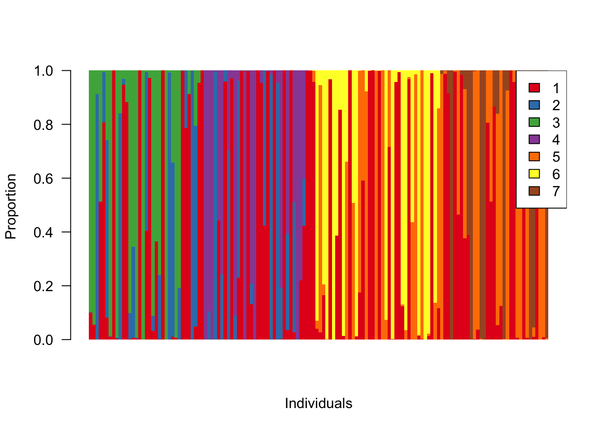
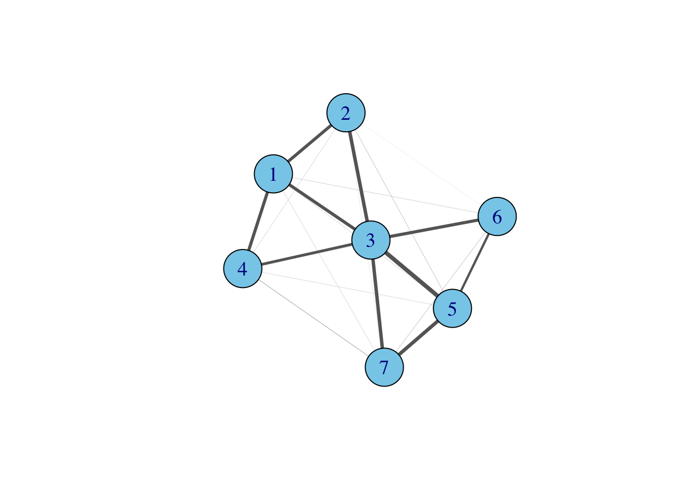
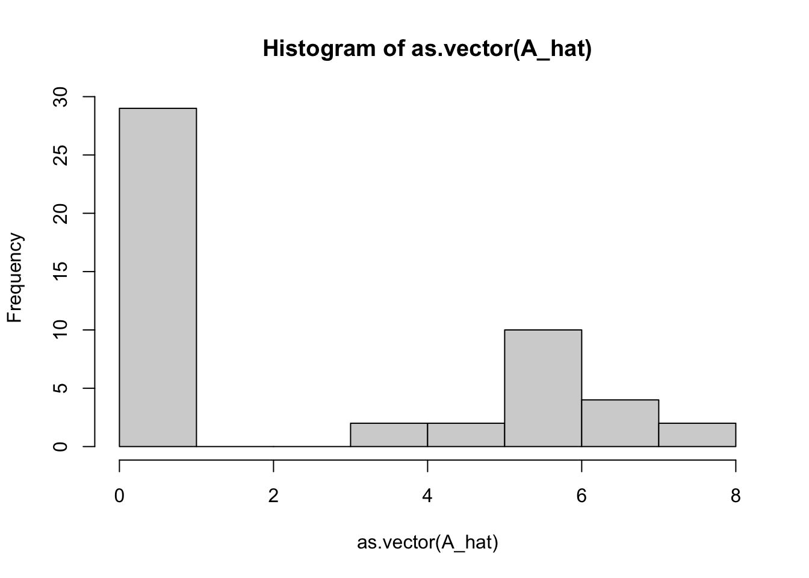
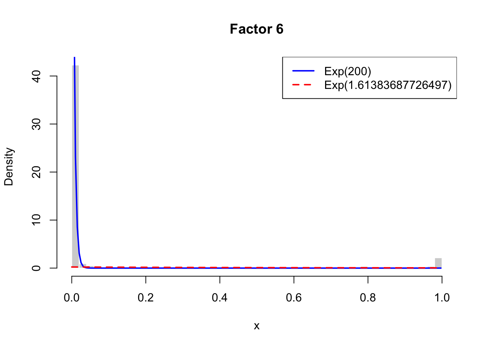
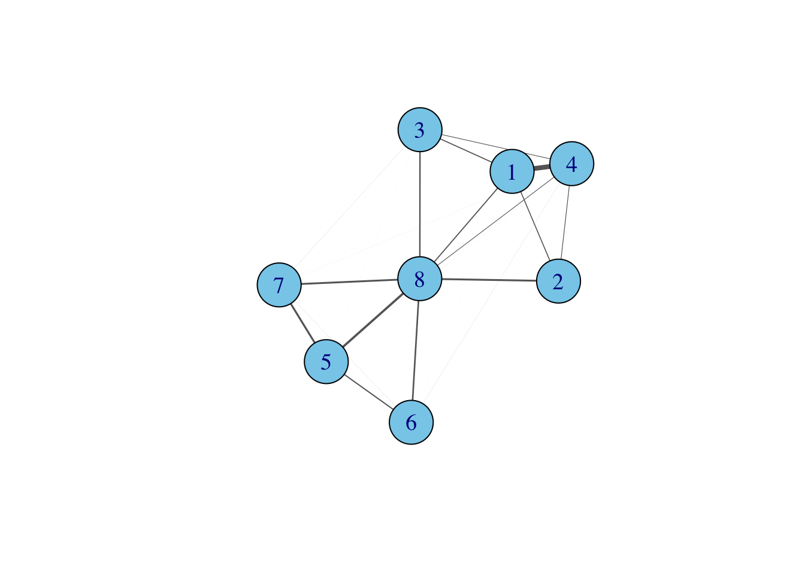

simulation-LDA-second-moment
Dat Do
2025-09-03
Last updated: 2025-09-05
Checks: 7 0
Knit directory: Graph-MF/
This reproducible R Markdown analysis was created with workflowr (version 1.7.1). The Checks tab describes the reproducibility checks that were applied when the results were created. The Past versions tab lists the development history.
Great! Since the R Markdown file has been committed to the Git repository, you know the exact version of the code that produced these results.
Great job! The global environment was empty. Objects defined in the global environment can affect the analysis in your R Markdown file in unknown ways. For reproduciblity it’s best to always run the code in an empty environment.
The command set.seed(20250902) was run prior to running
the code in the R Markdown file. Setting a seed ensures that any results
that rely on randomness, e.g. subsampling or permutations, are
reproducible.
Great job! Recording the operating system, R version, and package versions is critical for reproducibility.
Nice! There were no cached chunks for this analysis, so you can be confident that you successfully produced the results during this run.
Great job! Using relative paths to the files within your workflowr project makes it easier to run your code on other machines.
Great! You are using Git for version control. Tracking code development and connecting the code version to the results is critical for reproducibility.
The results in this page were generated with repository version bd71de8. See the Past versions tab to see a history of the changes made to the R Markdown and HTML files.
Note that you need to be careful to ensure that all relevant files for
the analysis have been committed to Git prior to generating the results
(you can use wflow_publish or
wflow_git_commit). workflowr only checks the R Markdown
file, but you know if there are other scripts or data files that it
depends on. Below is the status of the Git repository when the results
were generated:
Ignored files:
Ignored: .DS_Store
Ignored: .RData
Ignored: .Rhistory
Ignored: analysis/.DS_Store
Ignored: analysis/.RData
Ignored: analysis/.Rhistory
Untracked files:
Untracked: output/pancreas_admixture_barplot.pdf
Untracked: output/pancreas_grouped.pdf
Untracked: push.R
Unstaged changes:
Modified: code/visualize-RNAseq.R
Note that any generated files, e.g. HTML, png, CSS, etc., are not included in this status report because it is ok for generated content to have uncommitted changes.
These are the previous versions of the repository in which changes were
made to the R Markdown
(analysis/simulation-LDA-second-moment.Rmd) and HTML
(docs/simulation-LDA-second-moment.html) files. If you’ve
configured a remote Git repository (see ?wflow_git_remote),
click on the hyperlinks in the table below to view the files as they
were in that past version.
| File | Version | Author | Date | Message |
|---|---|---|---|---|
| Rmd | bd71de8 | dodat97 | 2025-09-05 | wflow_publish(c("analysis/index.Rmd", "analysis/simulation-LDA-second-moment.Rmd")) |
| html | 4238f5b | dodat97 | 2025-09-05 | Build site. |
| Rmd | 31443b1 | dodat97 | 2025-09-05 | wflow_publish(c("analysis/index.Rmd", "analysis/simulation-LDA-second-moment.Rmd")) |
| Rmd | 2b36a21 | dodat97 | 2025-09-04 | edit cancer GBCD file |
| html | 2b36a21 | dodat97 | 2025-09-04 | edit cancer GBCD file |
The goal of this project is to visualize the relationship between factors in (Sparse) Matrix Factorization and topics in Latent Dirichlet Allocation (LDA).
library(igraph)
library(MASS)
library(MCMCpack)
library(RColorBrewer)
set.seed(1)Data generating distribution
### Bifurcating tree L (each row is either 0 or exponentially distributed)
rMixPostiveManifold <- function(n, pis, rates){
# Generate loading matrix from a bifurcating tree with 3 levels, 7 nodes, 4 path in total
samples <- matrix(0, nrow=n, ncol=7)
comp <- numeric(n)
comp <- sample(1:4, size=n, replace = TRUE, prob = pis)
path = matrix(c(1, 2, 3,
1, 2, 4,
1, 5, 6,
1, 5, 7),
nrow=4, ncol=3, byrow = TRUE)
sorted_indx = c()
for (i in 1:4){
idx <- which(comp == i)
sorted_indx <- c(sorted_indx, idx)
if (length(idx) > 0){
samples[idx, path[i, 1]] <- rexp(length(idx), rate=rates[1])
samples[idx, path[i, 2]] <- rexp(length(idx), rate=rates[2])
samples[idx, path[i, 3]] <- rexp(length(idx), rate=rates[3])
}
}
L = samples[sorted_indx, ]
return(L)
}
# L = rMixPostiveManifold(n=100, pis=rep(.25, 4), rates=rep(1, 3))
# View(L)
### admixture L (each row sum up to 1)
rMixSimplex <- function(n, pis, alphas){
# Generate loading matrix from a bifurcating tree with 3 levels, 7 nodes, 4 path in total
samples <- matrix(0, nrow=n, ncol=7)
comp <- numeric(n)
comp <- sample(1:4, size=n, replace = TRUE, prob = pis)
path = matrix(c(1, 2, 3,
1, 2, 4,
1, 5, 6,
1, 5, 7),
nrow=4, ncol=3, byrow = TRUE)
sorted_indx = c()
for (i in 1:4){
idx <- which(comp == i)
sorted_indx <- c(sorted_indx, idx)
if (length(idx) > 0){
samples[idx, path[i, ]] <- rdirichlet(length(idx), alpha=alphas)
}
}
L = samples[sorted_indx, ]
return(L)
}Admixture barplot of this loading matrix:
## Generate true loading and plot
n = 700
L = rMixSimplex(n=n, pis=rep(.25, 4), alphas=c(.1, .1, .15))
colors7 <- brewer.pal(7, "Set1") # qualitative, good for categories
colors7[1] "#E41A1C" "#377EB8" "#4DAF4A" "#984EA3" "#FF7F00" "#FFFF33" "#A65628"colnames(L) <- paste0(1:7)
barplot(t(L[seq(1, n, by = 5), ]), beside = FALSE, col = colors7,
border = NA, space = 0,
xlab = "Individuals", ylab = "Proportion", las = 2)
legend("topright", legend = colnames(L), fill = colors7)
Here is the adjacency matrix formed by the second moments of \(L\):
## plot the graph
A = t(L) %*% L
diag(A) = 0
A = A / max(A) * 8
g <- graph_from_adjacency_matrix(A, mode = "undirected", weighted=TRUE)
# Plot it
plot(g,
vertex.size = 30,
vertex.label.cex = 1.2,
vertex.color = "skyblue",
edge.color = "gray40",
edge.width = E(g)$weight, # scale edge thickness by weight
layout = layout_with_fr)
Now let us generate text counting data from this loading matrix (by first generate the word-topic matrix randomly then simulate via LDA model). Then we fit LDA model in to get the estimated \(L\) matrix and plot its admixture barplot.
## Generate document data from the true loading
library(topicmodels)
library(tm)Loading required package: NLPV = 50
K = 7
beta <- matrix(0, nrow = K, ncol = V)
for (k in 1:K) {
beta[k, ] <- rdirichlet(1, alpha = rep(0.1, V))
}
doc_word_prob = L %*% beta
doc_mat = matrix(0, nrow = n, ncol = V)
for (d in 1:n){
doc_mat[d, ] = rmultinom(1, size=100, prob=doc_word_prob[d, ])
}
### It is interesting that setting size small (=50) will give uniform posterior
print(doc_mat[3, ]) [1] 0 0 7 1 0 0 0 0 2 0 0 0 35 0 0 0 1 12 0 0 0 0 0 15 2
[26] 0 1 0 0 0 0 0 0 1 14 0 0 0 1 0 0 3 0 3 0 0 0 2 0 0colnames(doc_mat) <- paste0("w", 1:V)
rownames(doc_mat) <- paste0("d", 1:n)
dtm <- as.DocumentTermMatrix(as.matrix(doc_mat), weighting = weightTf)
# Fit LDA with topicmodels (VEM)
lda_fit <- LDA(doc_mat, k = K, method = "VEM", control = list(seed = 123))
# Inspect results
L_hat <- posterior(lda_fit)$topics # doc-topic distributions
barplot(t(L_hat[(1:n)%%5==0, ]), beside = FALSE, col = colors7,
border = NA, space = 0,
ylab = "Proportion", las = 2)
Plot the adajacency matrix
A_hat = t(L_hat) %*% L_hat
diag(A_hat) = 0
A_adj = A_hat / max(A_hat) * 8
g <- graph_from_adjacency_matrix(A_adj, mode = "undirected", weighted=TRUE)
# Plot it
plot(g,
vertex.size = 30,
vertex.label.cex = 1.2,
vertex.color = "skyblue",
edge.color = "gray40",
edge.width = E(g)$weight, # scale edge thickness by weight
layout = layout_with_fr)
The second moment of the estimated \(L\) is not as sparse due to estimation error. However, there are many edges in this graph with weights almost zero. We can flatten the set of edges’ weights to see
hist(as.vector(A_hat))
We can use an Exponential Spike-and-Slab to separate noise from signal.
exp_SnS <- function(x, pi_init=0.5, lambda1=50, lambda2_init=0.1,
tol=1e-8, max_iter=1000) {
n <- length(x)
# initialize
pi <- pi_init
lambda2 <- lambda2_init
loglik_old <- -Inf
for (iter in 1:max_iter) {
# E-step: responsibilities
dens1 <- lambda1 * exp(-lambda1 * x)
dens2 <- lambda2 * exp(-lambda2 * x)
w <- pi * dens2 / ((1 - pi) * dens1 + pi * dens2)
# M-step
pi <- mean(w)
# lambda1 <- sum(1 - w) / sum((1 - w) * x)
lambda2 <- sum(w) / sum(w * x)
# log-likelihood
ll <- sum(log((1 - pi) * dens1 + pi * dens2))
if (abs(ll - loglik_old) < tol) break
loglik_old <- ll
}
list(pi=pi, lambda1=lambda1, lambda2=lambda2, loglik=loglik_old, iter=iter)
}
V = L_hat
lambda1 = 200 ## for spike component
for (k in 1:7){
x = L_hat[ ,k]
ret = exp_SnS(x, lambda1 = lambda1, lambda2_init = 0.1)
pi = ret$pi
lambda2 = ret$lambda2
x_range <- seq(0, max(x), length.out=200)
y1 <- (1-pi) * dexp(x_range, rate=lambda1)
y2 <- pi * dexp(x_range, rate=lambda2)
# histogram with density scale
hist(x, breaks=50, freq=FALSE, col="lightgray",
border="white", main=paste0("Factor ", k),
xlab="x", ylab="Density")
# add pdf curves
lines(x_range, y1, col="blue", lwd=2)
lines(x_range, y2, col="red", lwd=2, lty=2)
thresh = x_range[sum(y1 > y2)]
V[, k] = (L_hat[, k] > thresh) * L_hat[, k]
# legend
legend("topright", legend=c(paste0("Exp(", lambda1, ")"),
paste0("Exp(", lambda2, ")")),
col=c("blue", "red"), lwd=2, lty=c(1,2))
}

| Version | Author | Date |
|---|---|---|
| 4238f5b | dodat97 | 2025-09-05 |
| Version | Author | Date |
|---|---|---|
| 4238f5b | dodat97 | 2025-09-05 |
| Version | Author | Date |
|---|---|---|
| 4238f5b | dodat97 | 2025-09-05 |
| Version | Author | Date |
|---|---|---|
| 4238f5b | dodat97 | 2025-09-05 |
| Version | Author | Date |
|---|---|---|
| 4238f5b | dodat97 | 2025-09-05 |
| Version | Author | Date |
|---|---|---|
| 4238f5b | dodat97 | 2025-09-05 |
A_hat = t(V) %*% V
diag(A_hat) = 0
A_adj = A_hat / max(A_hat) * 8
g <- graph_from_adjacency_matrix(A_adj, mode = "undirected", weighted=TRUE)
# Plot it
plot(g,
vertex.size = 30,
vertex.label.cex = 1.2,
vertex.color = "skyblue",
edge.color = "gray40",
edge.width = E(g)$weight, # scale edge thickness by weight
layout = layout_with_fr)
| Version | Author | Date |
|---|---|---|
| 4238f5b | dodat97 | 2025-09-05 |
We almost recover the true graph.
Now let’s challenge it by over-fitting the topic model.
lda_fit <- LDA(doc_mat, k = 8, method = "VEM", control = list(seed = 123))
L_hat <- posterior(lda_fit)$topics # doc-topic distributions
colors8 = brewer.pal(8, "Set1")
barplot(t(L_hat[(1:n)%%5==0, ]), beside = FALSE, col = colors7,
border = NA, space = 0,
ylab = "Proportion", las = 2)
| Version | Author | Date |
|---|---|---|
| 4238f5b | dodat97 | 2025-09-05 |
A_hat = t(L_hat) %*% L_hat
diag(A_hat) = 0
A_adj = A_hat / max(A_hat) * 8
g <- graph_from_adjacency_matrix(A_adj, mode = "undirected", weighted=TRUE)
# Plot it
plot(g,
vertex.size = 30,
vertex.label.cex = 1.2,
vertex.color = "skyblue",
edge.color = "gray40",
edge.width = E(g)$weight, # scale edge thickness by weight
layout = layout_with_fr)
| Version | Author | Date |
|---|---|---|
| 4238f5b | dodat97 | 2025-09-05 |
Let’s truncate the result and plot again
lambda1 = 200 ## for spike component
V = L_hat
for (k in 1:8){
x = L_hat[ ,k]
ret = exp_SnS(x, lambda1 = lambda1, lambda2_init = 0.1)
pi = ret$pi
lambda2 = ret$lambda2
x_range <- seq(0, max(x), length.out=200)
y1 <- (1-pi) * dexp(x_range, rate=lambda1)
y2 <- pi * dexp(x_range, rate=lambda2)
# histogram with density scale
hist(x, breaks=50, freq=FALSE, col="lightgray",
border="white", main=paste0("Factor ", k),
xlab="x", ylab="Density")
# add pdf curves
lines(x_range, y1, col="blue", lwd=2)
lines(x_range, y2, col="red", lwd=2, lty=2)
thresh = x_range[sum(y1 > y2)]
V[, k] = (L_hat[, k] > thresh) * L_hat[, k]
# legend
legend("topright", legend=c(paste0("Exp(", lambda1, ")"),
paste0("Exp(", lambda2, ")")),
col=c("blue", "red"), lwd=2, lty=c(1,2))
}
| Version | Author | Date |
|---|---|---|
| 4238f5b | dodat97 | 2025-09-05 |
| Version | Author | Date |
|---|---|---|
| 4238f5b | dodat97 | 2025-09-05 |
| Version | Author | Date |
|---|---|---|
| 4238f5b | dodat97 | 2025-09-05 |
| Version | Author | Date |
|---|---|---|
| 4238f5b | dodat97 | 2025-09-05 |
| Version | Author | Date |
|---|---|---|
| 4238f5b | dodat97 | 2025-09-05 |

| Version | Author | Date |
|---|---|---|
| 4238f5b | dodat97 | 2025-09-05 |
| Version | Author | Date |
|---|---|---|
| 4238f5b | dodat97 | 2025-09-05 |
| Version | Author | Date |
|---|---|---|
| 4238f5b | dodat97 | 2025-09-05 |
A_hat = t(V) %*% V
diag(A_hat) = 0
A_adj = A_hat / max(A_hat) * 8
g <- graph_from_adjacency_matrix(A_adj, mode = "undirected", weighted=TRUE)
# Plot it
plot(g,
vertex.size = 30,
vertex.label.cex = 1.2,
vertex.color = "skyblue",
edge.color = "gray40",
edge.width = E(g)$weight, # scale edge thickness by weight
layout = layout_with_fr)
| Version | Author | Date |
|---|---|---|
| 4238f5b | dodat97 | 2025-09-05 |
We can see that one over-fitted topic have very similar behavior with a topic. How to merge them?
sessionInfo()R version 4.5.1 (2025-06-13)
Platform: aarch64-apple-darwin20
Running under: macOS Sequoia 15.6.1
Matrix products: default
BLAS: /Library/Frameworks/R.framework/Versions/4.5-arm64/Resources/lib/libRblas.0.dylib
LAPACK: /Library/Frameworks/R.framework/Versions/4.5-arm64/Resources/lib/libRlapack.dylib; LAPACK version 3.12.1
locale:
[1] en_US.UTF-8/en_US.UTF-8/en_US.UTF-8/C/en_US.UTF-8/en_US.UTF-8
time zone: America/Chicago
tzcode source: internal
attached base packages:
[1] stats graphics grDevices utils datasets methods base
other attached packages:
[1] tm_0.7-16 NLP_0.3-2 topicmodels_0.2-17 RColorBrewer_1.1-3
[5] MCMCpack_1.7-1 coda_0.19-4.1 MASS_7.3-65 igraph_2.1.4
[9] workflowr_1.7.1
loaded via a namespace (and not attached):
[1] sass_0.4.10 xml2_1.4.0 slam_0.1-55 stringi_1.8.7
[5] lattice_0.22-7 digest_0.6.37 magrittr_2.0.3 evaluate_1.0.4
[9] grid_4.5.1 fastmap_1.2.0 rprojroot_2.1.0 jsonlite_2.0.0
[13] Matrix_1.7-3 processx_3.8.6 whisker_0.4.1 survival_3.8-3
[17] ps_1.9.1 mcmc_0.9-8 promises_1.3.3 httr_1.4.7
[21] modeltools_0.2-24 jquerylib_0.1.4 cli_3.6.5 rlang_1.1.6
[25] splines_4.5.1 cachem_1.1.0 yaml_2.3.10 parallel_4.5.1
[29] tools_4.5.1 SparseM_1.84-2 MatrixModels_0.5-4 httpuv_1.6.16
[33] vctrs_0.6.5 R6_2.6.1 stats4_4.5.1 lifecycle_1.0.4
[37] git2r_0.36.2 stringr_1.5.1 fs_1.6.6 pkgconfig_2.0.3
[41] callr_3.7.6 pillar_1.11.0 bslib_0.9.0 later_1.4.2
[45] glue_1.8.0 Rcpp_1.1.0 xfun_0.52 tibble_3.3.0
[49] rstudioapi_0.17.1 knitr_1.50 htmltools_0.5.8.1 rmarkdown_2.29
[53] compiler_4.5.1 quantreg_6.1 getPass_0.2-4